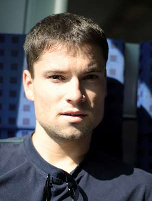

Willkommen
... zu meinem Beitrag für unsere Netzkultur ;)
Welcome... to my contribution to our lively internet culture
Selamat datang... bersahaja hanya selamat datang ;)
Lars K.W. Gohlke
online: www.lgohlke.de
... zu meinem Beitrag für unsere Netzkultur ;)
Welcome... to my contribution to our lively internet culture
Selamat datang... bersahaja hanya selamat datang ;)
Ich bin ein leidenschaftlicher Java Software Craftman. Permanent nach der besten Lösung für meine Kunden strebend, stark auf Dev-Ops und umfassender Qualität der Software bedacht.
"Kunden schätzen zwei Dinge an Software. The Art wie es Maschinen steuert und die Mühelosigkeit, wie sie sich anpassen lässt."
Uncle Bob "The Cycles of TDDThe Cycles of TDD"
Workshops und Lehrgänge zu Grundlagen und weiterführenden Themen der Systemadministration unter Linux
eingebettete A/V P2P Kommunikation auf Basis von DirectShow
Entwurf und Implementierung von Anwendungsdiensten in einer SOA-Umgebung (identigo, Ausgründung aus Cidas²)
eigenverantwortliche Betreuung einer 16köpfigen Bewohnergruppe mit dem Krankheitsbild „Schizophrenie“
Thema der vorliegenden Arbeit war die Analyse und Erarbeitung eines Konzeptes zur Verbesserung der statischen Fehlereingrenzung. Dabei ging es darum, einen leichtgewichtigen heuristischen Gegenentwurf zu aufwendigen statistischen Verfahren (z.B. Delta Debugging) zu entwickeln. Der Gegenentwurf beinhaltete die Modellierung einer Metrik zur Bestimmung der signifikantesten Tests.
Noten: 1.0 + 1.8
Wie weit läßt sich das Konzept der kontinuierlichen Integration in der Praxis wirklich umsetzen? Dieser zentralen Frage wurde in der Studienarbeit nachgegangen.
Note: 1.0
Die Arbeit bietet einen Einblick in die Entwicklung einer serviceorientierten Architektur und in die Verwendung von Enterprise Integration Pattern am Beispiel von Multi-Messaging mit Skype. Aufbauend auf einer SOA konnten weiterhin Aspekte zur Lösung der Skalierbarkeit und Robustheit eines Dienstes beschrieben und die Auflösung von Abhängigkeiten unter den Diensten betrachtet werden.
Noten: 1.0 + 1.3